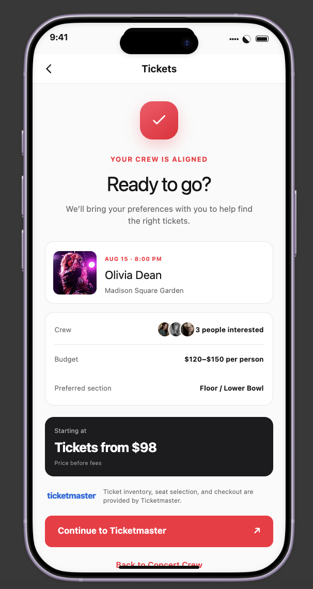
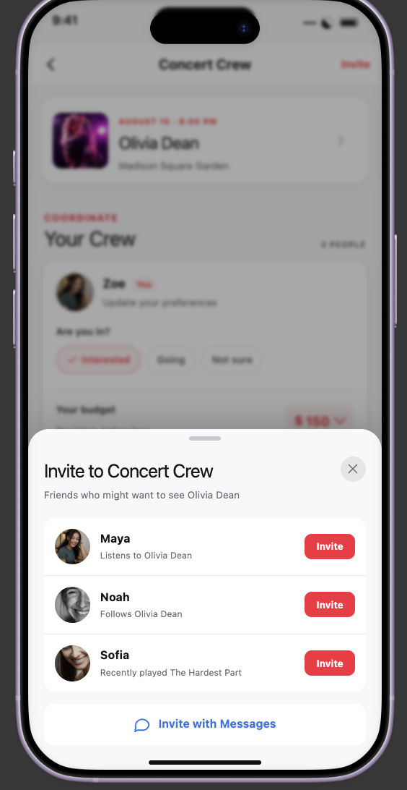

02 · Product Concept
Apple Music —
Concert Crew
A concert-planning concept that extends Apple Music’s concert discovery into coordination with friends.
Independent concept project. Not affiliated with Apple or Ticketmaster.
- ROLE
- Product Designer
- FORMAT
- Independent concept
- FOCUS
- Social planning + interaction
- PROTOTYPE
- Figma Make
to a coordinated plan.



Planning a concert often means moving across several apps.
As someone who goes to concerts often, I have found that discovering a show is only one part of the process. Planning with friends usually means moving between music, ticketing, and messaging apps.
A concert may be discovered through Apple Music, while dates and prices are checked through Ticketmaster and the planning itself happens through text messages. The same information is often repeated or searched more than once.
Because Apple Music already includes friends and concert discovery, I wanted to explore how those existing features could support planning. If two friends share interest in an artist, the app could provide a clear way to signal interest and coordinate the basic details of attending together.
The question I designed around was: how can Apple Music help friends turn shared interest in a concert into a coordinated plan?
Defining the role of Concert Crew
Concert Crew was designed to support planning without replacing Messages or Ticketmaster. Its role is to organize the information friends need while deciding whether a concert works for the group.
That required defining what Apple Music should surface, what should remain optional, and how the interface should represent differences in attendance, budget, and seating preferences.
From finding the show to making the plan
Concert Crew needed to feel like an extension of Apple Music rather than a separate planning service. The flow begins within concert discovery and introduces social planning only when it becomes relevant.
The discovery screen surfaces shared interest without changing the main purpose of the page. A user can see that friends are interested and open Concert Crew when they want to coordinate.
Concert Crew is the center of the concept. Each person can set attendance status, budget, and seating preference, while the summary shows where the group aligns and where preferences still differ.

Friend suggestions are tied to music context rather than presented as a generic contact list. The prototype explains why a person is suggested, such as listening to or following the artist, while still allowing an invite through Messages.
Before continuing to Ticketmaster, the group sees a final summary of its budget and seating preferences. Apple Music supports coordination; Ticketmaster remains the point of purchase.
Building the flow in Figma Make
Figma Make allowed me to test the concept as a connected interaction flow rather than a set of static screens. The prototype moves from concert discovery into Concert Crew, supports preference changes and invitations, updates the group summary, and continues into ticket selection.
AI-assisted prototyping accelerated the interaction work, while the core design decisions remained focused on scope: what belongs in Concert Crew, what should remain in Messages, and where Apple Music should hand off to Ticketmaster.
DISCOVER → CREW UP → COORDINATE → GO
The interactive prototype helped me evaluate the sequence as one experience and refine the handoff between discovery, coordination, and ticket selection.
What I learned
Focusing the concept on the planning stage, rather than adding more concert-discovery functionality, gave the project a clearer purpose.
Defining a clear role for each product helped keep the concept focused. Apple Music supports discovery and coordination, Messages remains available for conversation, and Ticketmaster handles live ticket inventory and checkout.
If I continued developing the concept, I would test which planning details matter most, how comfortable users are sharing concert interest with friends, and what information helps a group feel ready to move into ticket selection.